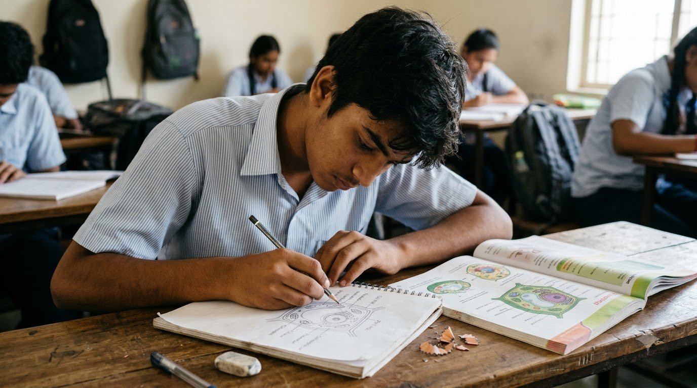
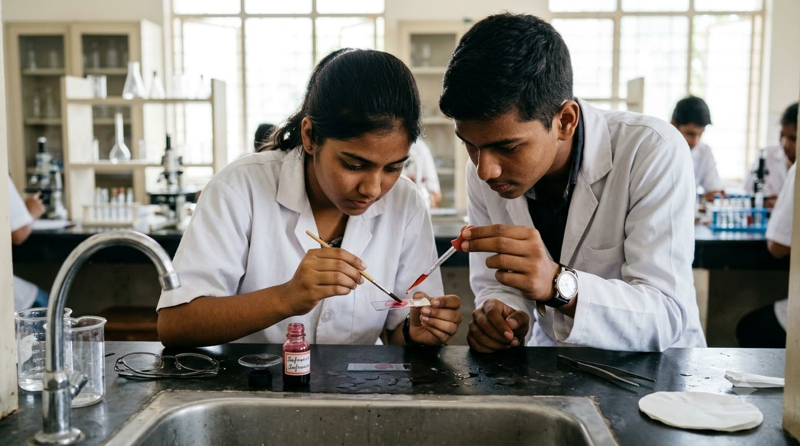

The Two-Year Intermediate BiPC Journey
The Intermediate BiPC (Biology, Physics, Chemistry) program offers a rigorous, two-year academic curriculum crafted to provide Class 10 graduates with mastery in the natural and life sciences.
Throughout First Year (Junior Inter) and Second Year (Senior Inter), students progress systematically through foundational cellular mechanisms, ecological systems, fundamental mechanical physics, and molecular chemistry.
Classroom lectures are tightly aligned with hands-on laboratory exercises, encouraging students to test theoretical principles through microscopic study, quantitative measurements, and chemical reactions.

First-Year & Second-Year Subject Structure
Intermediate education features a balanced combination of four core science disciplines alongside mandatory language study.
Junior Intermediate (Class 11)
Building core scientific literacy and transitioning students into advanced analytical thinking.
- 1. Botany: Plant kingdom diversity, morphology of flowering plants, cell biology, and structural organization in plants.
- 2. Zoology: Animal diversity, structural organization in animals, biology in human welfare, and locomotion.
- 3. Physics: Units, kinematics, laws of motion, work-energy, gravitation, mechanical properties of solids & fluids, thermodynamics.
- 4. Chemistry: Atomic structure, chemical bonding, states of matter, stoichiometry, thermodynamics, chemical equilibrium, s-block elements.
- 5. English: Prose, poetry, functional grammar, and reading comprehension.
- 6. Second Lang: Sanskrit / Telugu / Hindi / Urdu (as per board options).
Senior Intermediate (Class 12)
Advanced physiology, organic synthesis, electricity, magnetism, and board examination practical assessments.
- 1. Botany: Plant physiology, transport, photosynthesis, respiration, genetics, molecular biology, and biotechnology.
- 2. Zoology: Human anatomy and physiology (digestion, circulation, nervous, endocrine), genetics, evolution, and ecology.
- 3. Physics: Waves, ray and wave optics, electrostatics, current electricity, magnetism, electromagnetic induction, semiconductors.
- 4. Chemistry: Electrochemistry, kinetics, surface chemistry, p-block, d & f-block elements, organic functional groups, biomolecules.
- 5. English: Advanced literary analysis, communicative vocabulary, and structured composition.
- 6. Second Lang: Sanskrit / Telugu / Hindi / Urdu (continuation).
Current Academic and Examination Pattern
Subject syllabus, examination structure, practical assessment, internal assessment, marks distribution and language options are subject to the latest applicable Intermediate Board regulations.
For students in Telangana and across India, academic patterns and practical evaluation guidelines are continuously harmonized with notifications released by the respective State Intermediate Education Board (e.g., TGBIE) and National Education frameworks. Prospective students and parents are advised to refer to official board notifications for exact year-wise exam schemes.
Illustrative Daily Academic Schedule
A structured daily routine ensuring focused attention across classroom lectures, lab sessions, and guided study.
| Activity | Illustrative Schedule | Academic Focus |
|---|---|---|
| Morning Study | 8:00 AM – 9:00 AM | Concept revision, formula review & daily diagnostic questions |
| Academic Sessions | 9:00 AM – 1:00 PM | Core classroom lectures in Botany, Zoology, Physics & Chemistry |
| Lunch Break | 1:00 PM – 2:00 PM | Nutrition, rest, and informal peer discussions |
| Academic Sessions | 2:00 PM – 4:00 PM | Language sessions & in-depth problem-solving tutorials |
| Practical / Revision | 4:00 PM – 5:00 PM | Laboratory experiments, slide examinations, doubt resolution |

Synergy of Classroom Theory & Hands-on Laboratory Practical
In biological and physical sciences, classroom instruction introduces the theoretical models—cellular structures, molecular bonds, and physical equations. However, real conceptual retention happens when students verify these laws empirically.
By observing cross-sections under high-magnification compound microscopes or measuring focal lengths on optical benches, abstract ideas turn into tangible experiences.